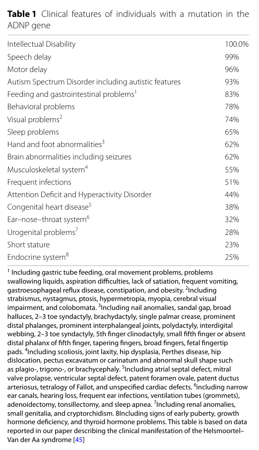

Ask a research question about ADNP-Related Syndrome. OpenScientist will conduct autonomous deep research using the Disorder Mechanisms Knowledge Base and PubMed literature (typically 10-30 minutes).
Do not include personal health information in your question. Questions and results are cached in your browser's local storage.
name: ADNP-Related Syndrome
creation_date: "2026-06-04T00:00:00Z"
category: Mendelian
disease_term:
preferred_term: ADNP-related syndrome
term:
id: MONDO:0014379
label: ADNP-related multiple congenital anomalies - intellectual disability - autism spectrum disorder
parents:
- autosomal dominant syndromic intellectual disability
- autism spectrum disorder
references:
- reference: PMID:27054228
title: "ADNP-Related Helsmoortel-Van der Aa Syndrome."
tags:
- GeneReviews
- reference: PMID:36945042
title: "Chromatin remodeler Activity-Dependent Neuroprotective Protein (ADNP) contributes to syndromic autism."
pathophysiology:
- name: ADNP Haploinsufficiency
description: >
ADNP-related Helsmoortel-Van der Aa syndrome is caused by de novo heterozygous
loss-of-function (predominantly truncating) variants in ADNP, which encodes the
activity-dependent neuroprotective protein, a transcription factor associated with
the SWI/SNF chromatin-remodeling complex. A single functional copy is insufficient
for normal brain development, resulting in haploinsufficiency. A confirmed
haploinsufficiency mechanism is supported by a non-coding splice-acceptor deletion
that abolishes detectable ADNP protein.
cell_types:
- preferred_term: Neuron
term:
id: CL:0000540
label: neuron
biological_processes:
- preferred_term: Chromatin remodeling (SWI/SNF-associated)
term:
id: GO:0006338
label: chromatin remodeling
modifier: DECREASED
- preferred_term: Regulation of transcription by RNA polymerase II
term:
id: GO:0006357
label: regulation of transcription by RNA polymerase II
modifier: ABNORMAL
evidence:
- reference: PMID:24531329
reference_title: "A SWI/SNF-related autism syndrome caused by de novo mutations in ADNP."
supports: SUPPORT
evidence_source: HUMAN_CLINICAL
snippet: "Here, we report ten patients with ASD and other shared clinical characteristics, including intellectual disability and facial dysmorphisms caused by a mutation in ADNP, a transcription factor involved in the SWI/SNF remodeling complex."
explanation: >
The original report establishes that de novo ADNP mutations cause a syndromic autism
phenotype and that ADNP is a transcription factor of the SWI/SNF chromatin-remodeling
complex.
- reference: PMID:38424297
reference_title: "Loss-of-function of activity-dependent neuroprotective protein (ADNP) by a splice-acceptor site mutation causes Helsmoortel-Van der Aa syndrome."
supports: SUPPORT
evidence_source: IN_VITRO
snippet: "An N-terminal truncated protein could not be detected in transfection experiments with a mutant expression vector in HEK293T cells, strongly suggesting this is a first confirmed diagnosis exclusively due to haploinsufficiency of the ADNP gene."
explanation: >
A non-coding splice-acceptor deletion abolishing detectable ADNP protein in cellular
assays confirms that haploinsufficiency is the disease mechanism.
- reference: PMID:36945042
reference_title: "Chromatin remodeler Activity-Dependent Neuroprotective Protein (ADNP) contributes to syndromic autism."
supports: SUPPORT
evidence_source: HUMAN_CLINICAL
snippet: "Heterozygous and predicted loss-of-function ADNP mutations in individuals inevitably result in the clinical presentation with the Helsmoortel-Van der Aa syndrome, a frequent form of syndromic autism."
explanation: >
Integrated review confirms that heterozygous predicted loss-of-function ADNP variants
cause Helsmoortel-Van der Aa syndrome.
- reference: PMID:36945042
reference_title: "Chromatin remodeler Activity-Dependent Neuroprotective Protein (ADNP) contributes to syndromic autism."
supports: SUPPORT
evidence_source: IN_VITRO
snippet: "The protein is associated with the pericentromeric protein HP1, the SWI/SNF core complex protein BRG1, and other members of this chromatin remodeling complex and, in murine stem cells, with the chromodomain helicase CHD4 in a ChAHP complex."
explanation: >
Defines ADNP's molecular role in chromatin remodeling via HP1, the SWI/SNF core protein
BRG1, and the CHD4-containing ChAHP complex.
downstream:
- target: Disrupted Chromatin Regulation and Neuronal Differentiation
causal_link_type: DIRECT
evidence:
- reference: PMID:36945042
reference_title: "Chromatin remodeler Activity-Dependent Neuroprotective Protein (ADNP) contributes to syndromic autism."
supports: SUPPORT
evidence_source: IN_VITRO
snippet: "The protein is associated with the pericentromeric protein HP1, the SWI/SNF core complex protein BRG1, and other members of this chromatin remodeling complex and, in murine stem cells, with the chromodomain helicase CHD4 in a ChAHP complex."
explanation: >
ADNP's chromatin-complex membership (HP1, BRG1/SWI-SNF, CHD4/ChAHP) means reduced
dosage directly disrupts chromatin-dependent transcriptional regulation.
- target: ADNP-Microtubule Cytoskeleton Dysfunction
causal_link_type: DIRECT
evidence:
- reference: PMID:33453943
reference_title: "Activity-dependent neuroprotective protein (ADNP)-end-binding protein (EB) interactions regulate microtubule dynamics toward protection against tauopathy."
supports: SUPPORT
evidence_source: MODEL_ORGANISM
snippet: "ADNP and its derived peptides, NAP and SKIP, directly interact with end-binding proteins (EBs), which decorate plus-tips of the growing axonal cytoskeleton-microtubules (MTs)."
explanation: >
ADNP directly binds microtubule plus-end machinery via EB proteins, so ADNP loss
directly disrupts the neuronal microtubule cytoskeleton.
- target: Synaptic Plasticity Dysfunction and CaMKII Hyperactivity
causal_link_type: INDIRECT_KNOWN_INTERMEDIATES
intermediate_mechanisms:
- reduced dendritic spine density
- CaMKII-alpha hyperphosphorylation
evidence:
- reference: PMID:30106381
reference_title: "Activity-dependent neuroprotective protein deficiency models synaptic and developmental phenotypes of autism-like syndrome."
supports: SUPPORT
evidence_source: MODEL_ORGANISM
snippet: "We discovered that Adnp deficiency reduced dendritic spine density and altered synaptic gene expression, both of which were partly ameliorated by NAP treatment."
explanation: >
Adnp haploinsufficiency leads to reduced dendritic spine density and altered synaptic
gene expression, linking ADNP loss to downstream synaptic plasticity dysfunction.
- name: Disrupted Chromatin Regulation and Neuronal Differentiation
description: >
ADNP is essential for brain formation and cognitive function. Reduced ADNP dosage
dysregulates chromatin-dependent transcriptional programs governing nervous system
development and neuron differentiation. Methylome and transcriptome analyses of an
ADNP haploinsufficient individual show differential regulation of genes involved in
brain development, the cytoskeleton, locomotion, behavior, and muscle development.
cell_types:
- preferred_term: Neuron
term:
id: CL:0000540
label: neuron
biological_processes:
- preferred_term: Nervous system development
term:
id: GO:0007399
label: nervous system development
modifier: ABNORMAL
- preferred_term: Neuron differentiation
term:
id: GO:0030182
label: neuron differentiation
modifier: ABNORMAL
- preferred_term: Wnt/beta-catenin signaling
term:
id: GO:0016055
label: Wnt signaling pathway
modifier: ABNORMAL
evidence:
- reference: PMID:38424297
reference_title: "Loss-of-function of activity-dependent neuroprotective protein (ADNP) by a splice-acceptor site mutation causes Helsmoortel-Van der Aa syndrome."
supports: SUPPORT
evidence_source: HUMAN_CLINICAL
snippet: "Pathway analysis of the methylome indicated differentially methylated genes involved in brain development, the cytoskeleton, locomotion, behavior, and muscle development."
explanation: >
Methylome pathway analysis in an ADNP-haploinsufficient individual implicates
disrupted regulation of brain-development and cytoskeletal gene programs.
- reference: PMID:33453943
reference_title: "Activity-dependent neuroprotective protein (ADNP)-end-binding protein (EB) interactions regulate microtubule dynamics toward protection against tauopathy."
supports: SUPPORT
evidence_source: MODEL_ORGANISM
snippet: "ADNP expression is essential for brain formation and cognitive function and is dysregulated in a variety of neurodegenerative diseases"
explanation: >
ADNP is required for normal brain formation and cognition; reduced dosage therefore
impairs neurodevelopment.
- name: ADNP-Microtubule Cytoskeleton Dysfunction
description: >
ADNP regulates the neuronal microtubule cytoskeleton through its NAP (NAPVSIPQ) motif,
which interacts with end-binding (EB) proteins decorating the plus-ends of growing
microtubules. ADNP-mutated neuronal cells show reduced microtubule content and aberrant
nuclear-cytoplasmic boundaries; disrupting microtubules pharmacologically mimics the
ADNP-mutant phenotype. The NAP-derived fragment davunetide rescues these deficits,
underpinning a microtubule-linked, druggable mechanism.
cell_types:
- preferred_term: Neuron
term:
id: CL:0000540
label: neuron
biological_processes:
- preferred_term: Microtubule cytoskeleton organization
term:
id: GO:0000226
label: microtubule cytoskeleton organization
modifier: DECREASED
evidence:
- reference: PMID:33453943
reference_title: "Activity-dependent neuroprotective protein (ADNP)-end-binding protein (EB) interactions regulate microtubule dynamics toward protection against tauopathy."
supports: SUPPORT
evidence_source: MODEL_ORGANISM
snippet: "ADNP and its derived peptides, NAP and SKIP, directly interact with end-binding proteins (EBs), which decorate plus-tips of the growing axonal cytoskeleton-microtubules (MTs)."
explanation: >
Demonstrates the molecular link between ADNP/NAP and microtubule plus-end dynamics
via end-binding proteins.
- reference: PMID:37759476
reference_title: "NAP (Davunetide): The Neuroprotective ADNP Drug Candidate Penetrates Cell Nuclei Explaining Pleiotropic Mechanisms."
supports: SUPPORT
evidence_source: IN_VITRO
snippet: "reduced microtubule content was observed in the ADNP-mutated cell lines. In parallel, disrupting microtubules by zinc or nocodazole intoxication mimicked ADNP mutation phenotypes"
explanation: >
ADNP-mutated neuronal cell lines have reduced microtubule content, and microtubule
disruption phenocopies the mutation, supporting a microtubule-based mechanism.
- name: Synaptic Plasticity Dysfunction and CaMKII Hyperactivity
description: >
Reduced ADNP dosage impairs synaptic structure and plasticity. In Adnp-haploinsufficient
mice, ADNP deficiency reduces dendritic spine density and alters synaptic gene expression
(partly rescued by the ADNP-derived peptide NAP). Adult Adnp-haploinsufficient hippocampus
shows CaMKII-alpha hyperphosphorylation and excessive long-term potentiation associated with
cognitive inflexibility, with CaMKII-alpha inhibition normalizing the synaptic-plasticity
phenotype. These synaptic changes provide a mechanistic link between ADNP loss and the
cognitive and behavioral phenotype.
cell_types:
- preferred_term: Neuron
term:
id: CL:0000540
label: neuron
biological_processes:
- preferred_term: Regulation of synaptic plasticity
term:
id: GO:0048167
label: regulation of synaptic plasticity
modifier: ABNORMAL
- preferred_term: Dendritic spine formation
term:
id: GO:0060996
label: dendritic spine development
modifier: DECREASED
evidence:
- reference: PMID:30106381
reference_title: "Activity-dependent neuroprotective protein deficiency models synaptic and developmental phenotypes of autism-like syndrome."
supports: SUPPORT
evidence_source: MODEL_ORGANISM
snippet: "We discovered that Adnp deficiency reduced dendritic spine density and altered synaptic gene expression, both of which were partly ameliorated by NAP treatment."
explanation: >
Adnp-haploinsufficient mice show reduced dendritic spine density and altered synaptic
gene expression, partly rescued by the ADNP-derived peptide NAP.
- reference: PMID:37365244
reference_title: "Adnp-mutant mice with cognitive inflexibility, CaMKIIalpha hyperactivity, and synaptic plasticity deficits."
supports: SUPPORT
evidence_source: MODEL_ORGANISM
snippet: "The adult Adnp-HT hippocampus shows hyperphosphorylated CaMKIIα and its substrates, including SynGAP1, and excessive long-term potentiation that is normalized by CaMKIIα inhibition."
explanation: >
Adnp-haploinsufficient mice show hippocampal CaMKII-alpha hyperphosphorylation and
excessive LTP normalized by CaMKII-alpha inhibition, linking ADNP loss to synaptic
plasticity dysfunction and cognitive inflexibility.
- name: Helsmoortel-Van der Aa DNA Methylation Episignature
description: >
ADNP haploinsufficiency produces a recognizable, disorder-specific genome-wide CpG
DNA methylation signature (episignature). The episignature is diagnostically useful and
can detect ADNP-related disease even when standard exome sequencing fails to identify a
coding variant, as shown for a non-coding intronic splice-acceptor deletion.
cell_types:
- preferred_term: Leukocyte (peripheral blood)
term:
id: CL:0000738
label: leukocyte
biological_processes:
- preferred_term: Chromatin remodeling
term:
id: GO:0006338
label: chromatin remodeling
modifier: ABNORMAL
evidence:
- reference: PMID:38424297
reference_title: "Loss-of-function of activity-dependent neuroprotective protein (ADNP) by a splice-acceptor site mutation causes Helsmoortel-Van der Aa syndrome."
supports: SUPPORT
evidence_source: HUMAN_CLINICAL
snippet: "Whereas exome sequencing failed to detect the non-coding deletion, genome-wide CpG methylation analysis revealed an episignature suggestive of a Helsmoortel-Van der Aa syndrome diagnosis."
explanation: >
Establishes that a reproducible DNA methylation episignature is characteristic of and
diagnostic for Helsmoortel-Van der Aa syndrome.
- reference: PMID:32758449
reference_title: "Episignatures Stratifying Helsmoortel-Van Der Aa Syndrome Show Modest Correlation with Phenotype."
supports: SUPPORT
evidence_source: HUMAN_CLINICAL
snippet: "we conducted an independent study on 24 individuals with HVDAS and replicated the existence of the two mutation-dependent episignatures."
explanation: >
An independent cohort of 24 individuals replicated two mutation-position-dependent DNA
methylation episignatures, confirming the reproducibility of the ADNP episignature for
diagnosis while showing only modest correlation with phenotype severity.
phenotypes:
- category: Neurologic
name: Intellectual Disability
description: >
Mild-to-severe intellectual disability is a core feature of the syndrome.
phenotype_term:
preferred_term: Intellectual disability
term:
id: HP:0001249
label: Intellectual disability
frequency: VERY_FREQUENT
evidence:
- reference: PMID:27054228
reference_title: "ADNP-Related Helsmoortel-Van der Aa Syndrome."
supports: SUPPORT
evidence_source: HUMAN_CLINICAL
snippet: "is characterized by hypotonia, speech and motor delay, mild-to-severe intellectual disability, and characteristic facial features"
explanation: >
GeneReviews lists mild-to-severe intellectual disability as a defining characteristic.
- category: Psychiatric
name: Autistic Behavior
description: >
Features of autism spectrum disorder, including stereotypic behavior and impaired
social interaction, are common; ADNP defines a specific autism subtype.
phenotype_term:
preferred_term: Autistic behavior
term:
id: HP:0000729
label: Autistic behavior
frequency: FREQUENT
evidence:
- reference: PMID:27054228
reference_title: "ADNP-Related Helsmoortel-Van der Aa Syndrome."
supports: SUPPORT
evidence_source: HUMAN_CLINICAL
snippet: "Features of autism spectrum disorder are common (stereotypic behavior, impaired social interaction)."
explanation: >
GeneReviews documents autism spectrum disorder features as common.
- reference: PMID:24531329
reference_title: "A SWI/SNF-related autism syndrome caused by de novo mutations in ADNP."
supports: SUPPORT
evidence_source: HUMAN_CLINICAL
snippet: "We estimate this gene to be mutated in at least 0.17% of ASD cases, making it one of the most frequent ASD-associated genes known to date."
explanation: >
ADNP is one of the most frequently mutated genes in autism spectrum disorder.
- category: Neurologic
name: Hypotonia
description: >
Hypotonia is a common early finding.
phenotype_term:
preferred_term: Hypotonia
term:
id: HP:0001252
label: Hypotonia
evidence:
- reference: PMID:27054228
reference_title: "ADNP-Related Helsmoortel-Van der Aa Syndrome."
supports: SUPPORT
evidence_source: HUMAN_CLINICAL
snippet: "is characterized by hypotonia, speech and motor delay, mild-to-severe intellectual disability, and characteristic facial features"
explanation: >
GeneReviews lists hypotonia as a characteristic feature.
- category: Neurodevelopmental
name: Speech and Motor Delay
description: >
Severe speech and motor developmental delay is characteristic.
phenotype_term:
preferred_term: Delayed speech and language development
term:
id: HP:0000750
label: Delayed speech and language development
frequency: VERY_FREQUENT
evidence:
- reference: PMID:27054228
reference_title: "ADNP-Related Helsmoortel-Van der Aa Syndrome."
supports: SUPPORT
evidence_source: HUMAN_CLINICAL
snippet: "is characterized by hypotonia, speech and motor delay, mild-to-severe intellectual disability, and characteristic facial features"
explanation: >
GeneReviews lists speech and motor delay as a defining characteristic.
- category: Neurodevelopmental
name: Motor Delay
description: >
Motor developmental delay is a near-universal, defining feature of the syndrome.
phenotype_term:
preferred_term: Motor delay
term:
id: HP:0001270
label: Motor delay
onset:
onset_category: INFANTILE
frequency: VERY_FREQUENT
evidence:
- reference: PMID:27054228
reference_title: "ADNP-Related Helsmoortel-Van der Aa Syndrome."
supports: SUPPORT
evidence_source: HUMAN_CLINICAL
snippet: "is characterized by hypotonia, speech and motor delay, mild-to-severe intellectual disability, and characteristic facial features"
explanation: >
GeneReviews lists motor delay as a defining characteristic of the syndrome.
- reference: PMID:29724491
reference_title: "Clinical Presentation of a Complex Neurodevelopmental Disorder Caused by Mutations in ADNP."
supports: SUPPORT
evidence_source: HUMAN_CLINICAL
snippet: "a distinctive combination of clinical features, including mild to severe intellectual disability, autism, severe speech and motor delay"
explanation: >
The Van Dijck cohort describes severe speech and motor delay as part of the
distinctive clinical combination.
- category: Craniofacial
name: Characteristic Facial Features
description: >
Characteristic facial features include a prominent forehead, high anterior hairline,
wide and depressed nasal bridge, and a short nose with full, upturned nasal tip.
phenotype_term:
preferred_term: Characteristic facial features
term:
id: HP:0001999
label: Abnormal facial shape
evidence:
- reference: PMID:27054228
reference_title: "ADNP-Related Helsmoortel-Van der Aa Syndrome."
supports: SUPPORT
evidence_source: HUMAN_CLINICAL
snippet: "characteristic facial features (prominent forehead, high anterior hairline, wide and depressed nasal bridge, and short nose with full, upturned nasal tip)"
explanation: >
GeneReviews describes the recognizable facial gestalt of the syndrome.
- category: Behavioral
name: Sleep Disturbance
description: >
Sleep disturbance is a common comorbidity.
phenotype_term:
preferred_term: Sleep disturbance
term:
id: HP:0002360
label: Sleep disturbance
evidence:
- reference: PMID:27054228
reference_title: "ADNP-Related Helsmoortel-Van der Aa Syndrome."
supports: SUPPORT
evidence_source: HUMAN_CLINICAL
snippet: "Other common findings include additional behavioral problems, sleep disturbance, structural brain abnormalities, feeding issues, gastrointestinal problems"
explanation: >
GeneReviews lists sleep disturbance among common findings.
- category: Neurologic
name: Structural Brain Abnormalities
description: >
Structural brain abnormalities are common.
phenotype_term:
preferred_term: Abnormal brain morphology
term:
id: HP:0012443
label: Abnormal brain morphology
evidence:
- reference: PMID:27054228
reference_title: "ADNP-Related Helsmoortel-Van der Aa Syndrome."
supports: SUPPORT
evidence_source: HUMAN_CLINICAL
snippet: "Other common findings include additional behavioral problems, sleep disturbance, structural brain abnormalities, feeding issues, gastrointestinal problems"
explanation: >
GeneReviews lists structural brain abnormalities among common findings.
- category: Gastrointestinal
name: Feeding Difficulties
description: >
Feeding issues are common, particularly in infancy.
phenotype_term:
preferred_term: Feeding difficulties
term:
id: HP:0011968
label: Feeding difficulties
evidence:
- reference: PMID:27054228
reference_title: "ADNP-Related Helsmoortel-Van der Aa Syndrome."
supports: SUPPORT
evidence_source: HUMAN_CLINICAL
snippet: "Other common findings include additional behavioral problems, sleep disturbance, structural brain abnormalities, feeding issues, gastrointestinal problems"
explanation: >
GeneReviews lists feeding issues among common findings.
- category: Ophthalmologic
name: Hypermetropia
description: >
Visual dysfunction is common and includes hypermetropia (farsightedness).
phenotype_term:
preferred_term: Hypermetropia
term:
id: HP:0000540
label: Hypermetropia
evidence:
- reference: PMID:27054228
reference_title: "ADNP-Related Helsmoortel-Van der Aa Syndrome."
supports: SUPPORT
evidence_source: HUMAN_CLINICAL
snippet: "visual dysfunction (hypermetropia, strabismus, cortical visual impairment)"
explanation: >
GeneReviews lists hypermetropia among common visual findings.
- category: Ophthalmologic
name: Strabismus
description: >
Strabismus is a common ophthalmologic finding.
phenotype_term:
preferred_term: Strabismus
term:
id: HP:0000486
label: Strabismus
evidence:
- reference: PMID:27054228
reference_title: "ADNP-Related Helsmoortel-Van der Aa Syndrome."
supports: SUPPORT
evidence_source: HUMAN_CLINICAL
snippet: "visual dysfunction (hypermetropia, strabismus, cortical visual impairment)"
explanation: >
GeneReviews lists strabismus among common visual findings.
- category: Immunologic
name: Recurrent Infections
description: >
Recurrent infections are a common comorbidity.
phenotype_term:
preferred_term: Recurrent infections
term:
id: HP:0002719
label: Recurrent infections
evidence:
- reference: PMID:27054228
reference_title: "ADNP-Related Helsmoortel-Van der Aa Syndrome."
supports: SUPPORT
evidence_source: HUMAN_CLINICAL
snippet: "musculoskeletal anomalies, recurrent infections, endocrine issues including short stature and thyroid and/or growth hormone deficiencies"
explanation: >
GeneReviews lists recurrent infections among common comorbidities.
- category: Musculoskeletal
name: Musculoskeletal Anomalies
description: >
Musculoskeletal anomalies are a common comorbidity in ADNP-related syndrome.
phenotype_term:
preferred_term: Abnormality of the musculoskeletal system
term:
id: HP:0033127
label: Abnormality of the musculoskeletal system
evidence:
- reference: PMID:27054228
reference_title: "ADNP-Related Helsmoortel-Van der Aa Syndrome."
supports: SUPPORT
evidence_source: HUMAN_CLINICAL
snippet: "musculoskeletal anomalies, recurrent infections, endocrine issues including short stature and thyroid and/or growth hormone deficiencies"
explanation: >
GeneReviews lists musculoskeletal anomalies among common findings.
- category: Endocrine
name: Short Stature
description: >
Endocrine issues include short stature and thyroid and/or growth hormone deficiencies.
phenotype_term:
preferred_term: Short stature
term:
id: HP:0004322
label: Short stature
evidence:
- reference: PMID:27054228
reference_title: "ADNP-Related Helsmoortel-Van der Aa Syndrome."
supports: SUPPORT
evidence_source: HUMAN_CLINICAL
snippet: "endocrine issues including short stature and thyroid and/or growth hormone deficiencies"
explanation: >
GeneReviews lists short stature among endocrine findings.
- category: Cardiovascular
name: Cardiac Anomalies
description: >
Congenital cardiac anomalies occur in the syndrome.
phenotype_term:
preferred_term: Abnormal heart morphology
term:
id: HP:0001627
label: Abnormal heart morphology
evidence:
- reference: PMID:27054228
reference_title: "ADNP-Related Helsmoortel-Van der Aa Syndrome."
supports: SUPPORT
evidence_source: HUMAN_CLINICAL
snippet: "endocrine and cardiac findings, hearing loss, seizures, and urinary tract anomalies"
explanation: >
GeneReviews lists cardiac findings among common features.
- reference: PMID:29724491
reference_title: "Clinical Presentation of a Complex Neurodevelopmental Disorder Caused by Mutations in ADNP."
supports: SUPPORT
evidence_source: HUMAN_CLINICAL
snippet: "Brain abnormalities, behavioral problems, sleep disturbance, epilepsy, hypotonia, visual problems, congenital heart defects, gastrointestinal problems, short stature, and hormonal deficiencies are common comorbidities."
explanation: >
The 78-individual cohort study lists congenital heart defects among common comorbidities.
- category: Neurologic
name: Seizures
description: >
Seizures (epilepsy) occur in a subset of affected individuals.
phenotype_term:
preferred_term: Seizure
term:
id: HP:0001250
label: Seizure
evidence:
- reference: PMID:29724491
reference_title: "Clinical Presentation of a Complex Neurodevelopmental Disorder Caused by Mutations in ADNP."
supports: SUPPORT
evidence_source: HUMAN_CLINICAL
snippet: "Brain abnormalities, behavioral problems, sleep disturbance, epilepsy, hypotonia, visual problems, congenital heart defects, gastrointestinal problems, short stature, and hormonal deficiencies are common comorbidities."
explanation: >
The cohort study lists epilepsy among common comorbidities.
- category: Dental
name: Advanced Tooth Eruption
description: >
Early eruption of the primary (deciduous) teeth is a recognizable, distinctive feature
of the syndrome reported in the defining clinical cohort.
phenotype_term:
preferred_term: Premature primary tooth eruption
term:
id: HP:0006288
label: Advanced eruption of teeth
frequency: VERY_FREQUENT
evidence:
- reference: PMID:28221363
reference_title: "Premature primary tooth eruption in cognitive/motor-delayed ADNP-mutated children."
supports: SUPPORT
evidence_source: HUMAN_CLINICAL
snippet: "we discovered premature tooth eruption as a potential early diagnostic biomarker for ADNP mutation. The parents of 44/54 ADNP-mutated children reported an almost full erupted dentition by 1 year of age, including molars"
explanation: >
A dedicated study reports premature primary (deciduous) tooth eruption in 44 of 54
ADNP-mutated children, establishing early tooth eruption as a characteristic, highly
frequent diagnostic biomarker of ADNP syndrome.
- category: Neurodevelopmental
name: Global Developmental Delay
description: >
Global developmental delay with speech and motor dysfunction is a core, near-universal
feature of ADNP syndrome.
phenotype_term:
preferred_term: Global developmental delay
term:
id: HP:0001263
label: Global developmental delay
onset:
onset_category: INFANTILE
frequency: VERY_FREQUENT
evidence:
- reference: PMID:30106381
reference_title: "Activity-dependent neuroprotective protein deficiency models synaptic and developmental phenotypes of autism-like syndrome."
supports: SUPPORT
evidence_source: HUMAN_CLINICAL
snippet: "recent phenotypic characterization of children harboring ADNP mutations (ADNP syndrome children) revealed global developmental delays and intellectual disabilities, including speech and motor dysfunctions."
explanation: >
Phenotypic characterization of ADNP-mutation children documents global developmental
delays alongside intellectual disability and speech/motor dysfunction.
- category: Behavioral
name: Behavioral Problems
description: >
Additional behavioral problems beyond core autistic features are common comorbidities.
phenotype_term:
preferred_term: Behavioral problems
term:
id: HP:0000708
label: Atypical behavior
evidence:
- reference: PMID:29724491
reference_title: "Clinical Presentation of a Complex Neurodevelopmental Disorder Caused by Mutations in ADNP."
supports: SUPPORT
evidence_source: HUMAN_CLINICAL
snippet: "Brain abnormalities, behavioral problems, sleep disturbance, epilepsy, hypotonia, visual problems, congenital heart defects, gastrointestinal problems, short stature, and hormonal deficiencies are common comorbidities."
explanation: >
The 78-individual cohort study lists behavioral problems among common comorbidities.
- category: Gastrointestinal
name: Gastrointestinal Problems
description: >
Gastrointestinal problems are a common comorbidity in ADNP syndrome.
phenotype_term:
preferred_term: Gastrointestinal problems
term:
id: HP:0011024
label: Abnormality of the gastrointestinal tract
evidence:
- reference: PMID:29724491
reference_title: "Clinical Presentation of a Complex Neurodevelopmental Disorder Caused by Mutations in ADNP."
supports: SUPPORT
evidence_source: HUMAN_CLINICAL
snippet: "Brain abnormalities, behavioral problems, sleep disturbance, epilepsy, hypotonia, visual problems, congenital heart defects, gastrointestinal problems, short stature, and hormonal deficiencies are common comorbidities."
explanation: >
The cohort study lists gastrointestinal problems among common comorbidities.
- category: Ophthalmologic
name: Cerebral Visual Impairment
description: >
Cortical/cerebral visual impairment is among the common visual problems in the syndrome.
phenotype_term:
preferred_term: Cortical visual impairment
term:
id: HP:0100704
label: Cerebral visual impairment
evidence:
- reference: PMID:27054228
reference_title: "ADNP-Related Helsmoortel-Van der Aa Syndrome."
supports: SUPPORT
evidence_source: HUMAN_CLINICAL
snippet: "visual dysfunction (hypermetropia, strabismus, cortical visual impairment)"
explanation: >
GeneReviews lists cortical visual impairment among common visual findings.
- category: Genitourinary
name: Urinary Tract Anomalies
description: >
Urinary tract anomalies occur in the syndrome.
phenotype_term:
preferred_term: Urinary tract anomalies
term:
id: HP:0000079
label: Abnormality of the urinary system
evidence:
- reference: PMID:27054228
reference_title: "ADNP-Related Helsmoortel-Van der Aa Syndrome."
supports: SUPPORT
evidence_source: HUMAN_CLINICAL
snippet: "endocrine and cardiac findings, hearing loss, seizures, and urinary tract anomalies"
explanation: >
GeneReviews lists urinary tract anomalies among the features of the syndrome.
- category: Otolaryngologic
name: Hearing Loss
description: >
Hearing loss is among the common comorbidities of the syndrome.
phenotype_term:
preferred_term: Hearing impairment
term:
id: HP:0000365
label: Hearing impairment
evidence:
- reference: PMID:27054228
reference_title: "ADNP-Related Helsmoortel-Van der Aa Syndrome."
supports: SUPPORT
evidence_source: HUMAN_CLINICAL
snippet: "endocrine and cardiac findings, hearing loss, seizures, and urinary tract anomalies"
explanation: >
GeneReviews lists hearing loss among common findings.
genetic:
- name: ADNP loss-of-function variants
gene_term:
preferred_term: ADNP
term:
id: hgnc:15766
label: ADNP
association: Causative
presence: Positive
relationship_type: CAUSATIVE
variant_origin: DE_NOVO
notes: >
Heterozygous, predominantly de novo, loss-of-function (truncating) variants in ADNP
(activity-dependent neuroprotective protein; chromosome 20q13.13) cause the syndrome via
haploinsufficiency. The recurrent p.Tyr719* variant is associated with a more severe
phenotype.
inheritance:
- name: Autosomal dominant inheritance
inheritance_term:
preferred_term: Autosomal dominant inheritance
term:
id: HP:0000006
label: Autosomal dominant inheritance
evidence:
- reference: PMID:27054228
reference_title: "ADNP-Related Helsmoortel-Van der Aa Syndrome."
supports: SUPPORT
evidence_source: HUMAN_CLINICAL
snippet: "Most probands whose parents have undergone molecular genetic testing have the disorder as the result of a de novo ADNP pathogenic variant."
explanation: >
GeneReviews confirms autosomal dominant, predominantly de novo inheritance.
evidence:
- reference: PMID:24531329
reference_title: "A SWI/SNF-related autism syndrome caused by de novo mutations in ADNP."
supports: SUPPORT
evidence_source: HUMAN_CLINICAL
snippet: "Here, we report ten patients with ASD and other shared clinical characteristics, including intellectual disability and facial dysmorphisms caused by a mutation in ADNP, a transcription factor involved in the SWI/SNF remodeling complex."
explanation: >
Establishes ADNP as the causative gene for this syndromic autism/intellectual
disability phenotype.
- reference: PMID:29724491
reference_title: "Clinical Presentation of a Complex Neurodevelopmental Disorder Caused by Mutations in ADNP."
supports: SUPPORT
evidence_source: HUMAN_CLINICAL
snippet: "Strikingly, individuals with the recurrent p.Tyr719* mutation were more severely affected."
explanation: >
Documents the recurrent p.Tyr719* truncating variant and its association with greater
severity (genotype-phenotype correlation).
- reference: PMID:27054228
reference_title: "ADNP-Related Helsmoortel-Van der Aa Syndrome."
supports: SUPPORT
evidence_source: HUMAN_CLINICAL
snippet: "Most probands whose parents have undergone molecular genetic testing have the disorder as the result of a de novo ADNP pathogenic variant."
explanation: >
GeneReviews confirms the de novo, autosomal dominant nature of most pathogenic ADNP
variants.
treatments:
- name: Supportive and Multidisciplinary Therapy
description: >
Treatment is symptomatic and supportive: speech, occupational, and physical therapy;
specialized learning programs; treatment of neuropsychiatric features; and nutritional
support as needed. There is currently no disease-modifying therapy.
treatment_term:
preferred_term: supportive care
term:
id: MAXO:0000950
label: supportive care
evidence:
- reference: PMID:27054228
reference_title: "ADNP-Related Helsmoortel-Van der Aa Syndrome."
supports: SUPPORT
evidence_source: HUMAN_CLINICAL
snippet: "Treatment is symptomatic and can include: speech, occupational, and physical therapy; specialized learning programs depending on individual needs; treatment of neuropsychiatric features; nutritional support as needed"
explanation: >
GeneReviews describes symptomatic, multidisciplinary supportive management as the
standard of care.
- name: Speech Therapy
description: >
Speech therapy addresses the severe speech delay characteristic of the syndrome.
treatment_term:
preferred_term: speech therapy
term:
id: MAXO:0000930
label: speech therapy
evidence:
- reference: PMID:27054228
reference_title: "ADNP-Related Helsmoortel-Van der Aa Syndrome."
supports: SUPPORT
evidence_source: HUMAN_CLINICAL
snippet: "Treatment is symptomatic and can include: speech, occupational, and physical therapy"
explanation: >
GeneReviews recommends speech therapy as part of symptomatic management.
- name: Physical and Occupational Therapy
description: >
Physical and occupational therapy support motor development and hypotonia.
treatment_term:
preferred_term: physical therapy
term:
id: MAXO:0000011
label: physical therapy
evidence:
- reference: PMID:27054228
reference_title: "ADNP-Related Helsmoortel-Van der Aa Syndrome."
supports: SUPPORT
evidence_source: HUMAN_CLINICAL
snippet: "Treatment is symptomatic and can include: speech, occupational, and physical therapy"
explanation: >
GeneReviews recommends physical and occupational therapy.
- name: Genetic Counseling
description: >
Genetic counseling is recommended for families. ADNP-related syndrome is an
autosomal dominant disorder, most often arising de novo. Once the ADNP variant
is identified in an affected family member, prenatal and preimplantation genetic
testing are possible.
treatment_term:
preferred_term: genetic counseling
term:
id: MAXO:0000079
label: genetic counseling
evidence:
- reference: PMID:27054228
reference_title: "ADNP-Related Helsmoortel-Van der Aa Syndrome."
supports: SUPPORT
evidence_source: HUMAN_CLINICAL
snippet: "Once the ADNP pathogenic variant has been identified in an affected family member, prenatal and preimplantation genetic testing are possible."
explanation: >
GeneReviews describes the autosomal dominant inheritance and the availability of
prenatal and preimplantation genetic testing, supporting genetic counseling.
- name: Davunetide (NAP, investigational)
description: >
Davunetide (NAP, CP201) is an ADNP-derived neuroprotective peptide fragment under
investigation as a candidate mechanism-based therapy. In ADNP-mutated neuronal cell
models it corrects microtubule and nuclear-cytoplasmic abnormalities. It is
investigational and not an approved disease-modifying treatment for ADNP syndrome.
therapeutic_modality: PEPTIDE
treatment_term:
preferred_term: Pharmacotherapy
term:
id: NCIT:C15986
label: Pharmacotherapy
evidence:
- reference: PMID:37759476
reference_title: "NAP (Davunetide): The Neuroprotective ADNP Drug Candidate Penetrates Cell Nuclei Explaining Pleiotropic Mechanisms."
supports: SUPPORT
evidence_source: IN_VITRO
snippet: "This malformation was corrected upon neuronal differentiation by the ADNP-derived fragment drug candidate NAP (davunetide)."
explanation: >
In ADNP-mutated neuronal cell models, davunetide (NAP) corrects cellular abnormalities,
supporting it as an investigational mechanism-based candidate therapy.
- name: Low-Dose Ketamine (investigational)
description: >
Low-dose intravenous ketamine is an investigational therapy for ADNP syndrome based on
preclinical evidence that ketamine may induce ADNP expression. A single-dose, open-label
study of 0.5 mg/kg IV ketamine in 10 children with ADNP syndrome reported no serious
adverse events and nominally significant short-term behavioral improvements; results are
hypothesis-generating and not yet confirmed in a controlled trial. A follow-up
transcriptomic study showed a transient, monocyte-enriched blood gene-expression response.
therapeutic_modality: SMALL_MOLECULE
treatment_term:
preferred_term: Pharmacotherapy
term:
id: NCIT:C15986
label: Pharmacotherapy
therapeutic_agent:
- preferred_term: ketamine
term:
id: CHEBI:6121
label: ketamine
evidence:
- reference: PMID:36119806
reference_title: "An open-label study evaluating the safety, behavioral, and electrophysiological outcomes of low-dose ketamine in children with ADNP syndrome."
supports: SUPPORT
evidence_source: HUMAN_CLINICAL
snippet: "Ketamine was generally well tolerated, and there were no serious adverse events."
explanation: >
An open-label trial of low-dose IV ketamine in 10 children with ADNP syndrome found
it generally well tolerated with no serious adverse events.
- reference: PMID:36119806
reference_title: "An open-label study evaluating the safety, behavioral, and electrophysiological outcomes of low-dose ketamine in children with ADNP syndrome."
supports: SUPPORT
evidence_source: HUMAN_CLINICAL
snippet: "Preclinical evidence suggests that low-dose ketamine may induce expression of ADNP and that neuroprotective effects of ketamine may be mediated by ADNP."
explanation: >
The mechanistic rationale for ketamine in ADNP syndrome is that low-dose ketamine may
induce ADNP expression.
- reference: PMID:39054328
reference_title: "Transient peripheral blood transcriptomic response to ketamine treatment in children with ADNP syndrome."
supports: SUPPORT
evidence_source: HUMAN_CLINICAL
snippet: "We show that ketamine triggers immediate and profound gene expression alterations, with specific enrichment of monocyte-related expression patterns."
explanation: >
Longitudinal blood transcriptomics in ADNP-syndrome individuals shows a transient,
monocyte-enriched gene-expression response to a single low-dose ketamine infusion.
clinical_trials:
- name: NCT04388774
phase: PHASE_II
status: COMPLETED
description: >
Phase 2A single-dose, open-label study of low-dose (0.5 mg/kg) IV ketamine in 10 children
(ages 5-12) with ADNP syndrome, evaluating safety, tolerability, and efficacy with RNA/DNA
sequencing and DNA methylation biomarker collection.
target_phenotypes:
- preferred_term: Autistic behavior
term:
id: HP:0000729
label: Autistic behavior
- preferred_term: Intellectual disability
term:
id: HP:0001249
label: Intellectual disability
evidence:
- reference: clinicaltrials:NCT04388774
reference_title: "A Phase 2A Open-Label Study Evaluating the Safety and Efficacy of Low-Dose Ketamine in Children With ADNP Syndrome"
supports: SUPPORT
evidence_source: HUMAN_CLINICAL
snippet: "This is a Phase 2A, single dose, open-label study to evaluate the safety, tolerability, and efficacy of a low-dose, 40-minute infusion into the veins (intravenous infusion or \"IV\") of ketamine in children with ADNP syndrome (Activity-Dependent Neuroprotective Protein)."
explanation: >
ClinicalTrials.gov describes this completed Phase 2A open-label trial of low-dose IV
ketamine in children with ADNP syndrome.
- name: NCT03718936
phase: NOT_APPLICABLE
status: RECRUITING
description: >
Observational natural-history / assessment study (Seaver Autism Center, Mount Sinai)
characterizing ADNP-related neurodevelopmental disorders using genetic, medical, and
neuropsychological measures.
target_phenotypes:
- preferred_term: Intellectual disability
term:
id: HP:0001249
label: Intellectual disability
- preferred_term: Global developmental delay
term:
id: HP:0001263
label: Global developmental delay
evidence:
- reference: clinicaltrials:NCT03718936
reference_title: "The Seaver Autism Center for Research and Treatment - Assessment Core"
supports: SUPPORT
evidence_source: HUMAN_CLINICAL
snippet: "This study seeks to characterize ADNP-related neurodevelopmental disorders using a number of genetic, medical and neuropsychological measures."
explanation: >
ClinicalTrials.gov describes this observational study characterizing ADNP-related
neurodevelopmental disorders.
Question: You are an expert researcher providing comprehensive, well-cited information.
Provide detailed information focusing on: 1. Key concepts and definitions with current understanding 2. Recent developments and latest research (prioritize 2023-2024 sources) 3. Current applications and real-world implementations 4. Expert opinions and analysis from authoritative sources 5. Relevant statistics and data from recent studies
Format as a comprehensive research report with proper citations. Include URLs and publication dates where available. Always prioritize recent, authoritative sources and provide specific citations for all major claims.
Please provide a comprehensive research report on ADNP-Related Syndrome covering all of the disease characteristics listed below. This report will be used to populate a disease knowledge base entry. Be thorough and cite primary literature (PMID preferred) for all claims.
For each section, suggested databases/resources are listed. These are the first places you should search for information on each topic.
Search first: OMIM, Orphanet, ICD-10/ICD-11, MeSH, PubMed
Search first: PubMed, Cochrane Library, UpToDate, clinical guidelines, ClinVar, ClinGen, GWAS Catalog, PheGenI, CTD, CDC, WHO, epidemiological databases
Search first: PubMed, Cochrane Library, clinical trial databases, GWAS Catalog, gnomAD, WHO, CDC, nutrition databases
Search first: CTD, PubMed, PheGenI, GxE databases
Search first: HPO (Human Phenotype Ontology), OMIM, Orphanet, PubMed, clinicaltrials.gov, MedDRA, SNOMED CT, DECIPHER, LOINC
For each phenotype, provide: - Phenotype type: symptoms, clinical signs, physical manifestations, behavioral changes, or laboratory abnormalities
For symptoms/signs: HPO, OMIM, Orphanet, PubMed For behavioral changes: HPO, DSM, RDoC (Research Domain Criteria), PubMed For laboratory abnormalities: LOINC, SNOMED CT, LabTests Online, PubMed - Phenotype characteristics: Search first: OMIM, Orphanet, HPO, PubMed - Age of symptom onset (neonatal, childhood, adult-onset, late-onset) - Symptom severity (mild, moderate, severe, variable) - Symptom progression (stable, progressive, episodic, fluctuating) - Frequency among affected individuals (percentage or qualitative) - Quality of life impact: Effects on daily functioning and well-being (per-phenotype when possible) Search first: EQ-5D database, SF-36, WHO QOL databases, PubMed - Suggest HPO (Human Phenotype Ontology) terms for each phenotype
Search first: OMIM, ClinVar, HGMD, Ensembl, NCBI Gene
Search first: ENCODE, Roadmap Epigenomics, MethBase, DiseaseMeth
Search first: DECIPHER, ClinVar, ECARUCA, UCSC Genome Browser
Search first: CTD (Comparative Toxicogenomics Database), TOXNET, PubMed, EPA databases
Search first: CDC databases, WHO, PubMed, NHANES
Search first: NCBI Taxonomy, ViPR, BV-BRC, MicrobeDB, GIDEON
Search first: KEGG, Reactome, WikiPathways, PathBank, BioCyc
Search first: Gene Ontology (GO), Reactome, KEGG, PubMed
Search first: UniProt, PDB (Protein Data Bank), InterPro, Pfam, AlphaFold
Search first: KEGG, BioCyc, HMDB (Human Metabolome Database), BRENDA
Search first: ImmPort, Immunome Database, IEDB, Gene Ontology
Search first: PubMed, Gene Ontology, Reactome
Search first: BRENDA, UniProt, KEGG, OMIM, PubMed
Search first: ENCODE, Roadmap Epigenomics, MethBase, DiseaseMeth
For each mechanism, describe: - The causal chain from initial trigger to clinical manifestation - Which mechanisms are upstream vs downstream - What cell types and biological processes are involved - Suggest GO terms for biological processes and CL terms for cell types
Search first: Uberon, FMA (Foundational Model of Anatomy), OMIM, HPO, ICD-11, MeSH, SNOMED CT
Search first: Uberon, Human Protein Atlas, Cell Ontology, Human Cell Atlas, CellMarker, PanglaoDB
Search first: Gene Ontology (Cellular Component), UniProt, Human Protein Atlas
Search first: OMIM, Orphanet, HPO, PubMed
Search first: Disease registries, longitudinal cohort databases, natural history studies, PubMed, Orphanet, OMIM
Search first: Orphanet, CDC, WHO, GBD (Global Burden of Disease), national registries, SEER, disease registries
Search first: GTR (Genetic Testing Registry), GeneReviews, ClinGen
For each treatment, suggest MAXO (Medical Action Ontology) terms where applicable.
Search first: CDC vaccine schedules, WHO immunization, FDA vaccine database
Search first: CDC, WHO, behavioral intervention databases, Cochrane Library
Search first: NSGC resources, ACMG guidelines, GeneReviews
Search first: Clinical guidelines, FDA approvals, PubMed
Search first: NCBI Taxonomy
Search first: VBO (Vertebrate Breed Ontology)
Search first: NCBI Gene
Structure your response as a comprehensive narrative organized by the sections above. For each section, provide: - Factual content with specific details (numbers, percentages, gene names, variant nomenclature) - Ontology term suggestions (HPO, GO, CL, UBERON, CHEBI, MAXO, MONDO) where applicable - Evidence citations with PMIDs - Direct quotes from abstracts to support key claims - Clear indication when information is not available or not applicable for this disease
This report will be used to populate a disease knowledge base entry with: - Pathophysiology descriptions with causal chains - Gene/protein annotations (HGNC, GO terms) - Phenotype associations (HP terms) with frequencies - Cell type involvement (CL terms) - Anatomical locations (UBERON terms) - Chemical entities (CHEBI terms) - Treatment annotations (MAXO terms) - Evidence items with PMIDs and exact abstract quotes - Epidemiology, prognosis, diagnostic, and prevention information - Animal model descriptions with phenotype recapitulation details
Disease name: ADNP-related syndrome (ADNP syndrome; Helsmoortel–Van der Aa syndrome, HVDAS) (grice2024transientperipheralblood pages 1-2, ge2024clinicalimpactand pages 1-2)
ADNP-related syndrome is a rare, monogenic neurodevelopmental disorder caused by pathogenic variants in ADNP (activity dependent neuroprotector homeobox). It is characterized by global developmental delay/intellectual disability and frequent autism/autistic features, with multisystem medical comorbidity (e.g., hypotonia, feeding/GI issues, congenital heart disease, visual problems, sleep disturbance). (grice2024transientperipheralblood pages 1-2, d’incal2023chromatinremodeleractivitydependent pages 6-8)
Definition quote (abstract-level): “Activity-dependent neuroprotective protein (ADNP) syndrome is a rare neurodevelopmental disorder resulting in intellectual disability, developmental delay and autism spectrum disorder (ASD) and is due to mutations in the ADNP gene.” (Translational Psychiatry, published Jul 2024) (grice2024transientperipheralblood pages 1-2)
Not found in the retrieved sources: Orphanet ORPHA code, ICD-10/ICD-11 mapping, and MeSH disease term were not present in the tool-retrieved full text/corpus used here; these should be confirmed directly in Orphanet/ICD/MeSH authoritative databases for knowledge-base completeness.
Most clinical knowledge is derived from aggregated disease-level resources: cohort studies, genotype-first sequencing cohorts, and systematic reviews (e.g., n=78 cohort in 2019; review synthesis in 2023). (d’incal2023chromatinremodeleractivitydependent pages 6-8, dijck2019clinicalpresentationof pages 13-18)
Primary cause: pathogenic heterozygous ADNP variants, typically de novo, most often predicted loss-of-function (nonsense/frameshift). (d’incal2023chromatinremodeleractivitydependent pages 6-8, helsmoortel2014aswisnfrelated pages 2-4, dijck2019clinicalpresentationof pages 13-18)
Variant mechanism nuance: Many recurrent truncating variants occur in the last exon and are predicted to escape nonsense-mediated decay, with mutant transcripts detectable; consequently, some disease biology may involve truncated protein effects rather than pure haploinsufficiency. (helsmoortel2014aswisnfrelated pages 2-4, d’incal2023chromatinremodeleractivitydependent pages 6-8)
No validated protective genetic or environmental factors for ADNP-related syndrome were identified in the retrieved evidence corpus. (d’incal2023chromatinremodeleractivitydependent pages 6-8)
No ADNP-specific gene–environment interaction evidence was identified in the retrieved sources.
A 2023 review synthesized phenotype frequencies (Table 1), reporting: intellectual disability 100%, speech delay 99%, motor delay 96%, autism/autistic features 93%, feeding/GI problems 83%, behavioral problems 78%, visual problems 74%, sleep problems 65%, hand/foot abnormalities 62%, brain abnormalities/seizures 62%, musculoskeletal issues 55%, frequent infections 51%. (d’incal2023chromatinremodeleractivitydependent pages 6-8, d’incal2023chromatinremodeleractivitydependent media ebbb8a81)
A 2019 cohort (n=78) provided additional quantified phenotypes, including visual problems (73.6%; e.g., strabismus 49.2%, hypermetropia 40.3%, cortical visual impairment 41%), recurrent infections (51%), oral movement problems (45.6%), and male cryptorchidism (34%). (dijck2019clinicalpresentationof pages 13-18)
A 2024 Chinese pediatric cohort (n=15) illustrates multisystem frequencies in an ascertained clinic cohort, including strabismus (6/15), atrial septal defect (5/15), oral movement problems (8/15), vomiting (6/15), and various urogenital/musculoskeletal findings. (ge2024clinicalimpactand pages 4-5)
ADNP-related syndrome is a developmental disorder with onset in infancy/early childhood, typically recognized through early developmental delay, hypotonia, feeding difficulties, and later neurobehavioral features including ASD. (helsmoortel2014aswisnfrelated pages 2-4, grice2024transientperipheralblood pages 1-2)
Natural history signals include reported genotype–phenotype correlations and age-dependent functional outcomes (e.g., walking age predicting cognitive outcome noted in review summaries); robust longitudinal, population-based natural history remains limited. (d’incal2023chromatinremodeleractivitydependent pages 6-8)
Direct standardized QoL instruments (e.g., EQ-5D/SF-36) were not identified in the retrieved evidence set; however, phenotypes such as severe speech delay, motor delay, feeding/oral-motor difficulties, sleep disturbance, and ASD features imply substantial impact on activities of daily living and caregiver burden. (d’incal2023chromatinremodeleractivitydependent pages 6-8, kolevzon2022anopenlabelstudy pages 1-2)
ASD contribution statistic: The original discovery study reported 10 ADNP mutations among 5,776 screened patients and estimated “mutated in at least 0.17% of ASD cases.” (Nature Genetics, published Feb 2014) (helsmoortel2014aswisnfrelated pages 1-2)
Current evidence supports predicted loss-of-function as the dominant pathogenic class, but NMD-escape truncations with mutation-position-dependent epigenetic signatures support more complex downstream consequences (possibly hypomorphic or gain-of-function contributions in some settings). (d’incal2023chromatinremodeleractivitydependent pages 6-8, breen2020episignaturesstratifyingadnp pages 4-6)
No validated modifier genes were identified in the retrieved evidence corpus.
Blood DNA methylation studies identify two ADNP episignatures stratified by variant position (“class I” vs “class II”), with distinct directionality and magnitude of methylation changes. (breen2020episignaturesstratifyinghelsmoortelvan pages 2-4, breen2020episignaturesstratifyinghelsmoortelvan pages 4-5)
The retrieved evidence emphasizes genetic causation; no disease-specific environmental, lifestyle, or infectious contributors were identified. (grice2024transientperipheralblood pages 1-2)
ADNP is a multifunctional protein linking chromatin remodeling/transcription, RNA/R-loop regulation, and cytoskeletal (microtubule) regulation. (d’incal2023chromatinremodeleractivitydependent pages 1-2, d’incal2023chromatinremodeleractivitydependent pages 19-20)
A coherent causal chain supported by multiple sources is: 1) Pathogenic ADNP variants disrupt ADNP protein level/function (often truncating variants escaping NMD) (helsmoortel2014aswisnfrelated pages 2-4, d’incal2023chromatinremodeleractivitydependent pages 6-8) 2) Chromatin remodeling dysregulation via SWI/SNF-BAF interactions (e.g., BRG1) and ChAHP/HP1/CHD4 complexes alters developmental gene regulation and cell fate programs (d’incal2023chromatinremodeleractivitydependent pages 1-2, d’incal2023chromatinremodeleractivitydependent pages 11-13) 3) Neuronal development and connectivity impairments, including neuritogenesis changes and synaptic/cytoskeletal dysregulation (EB1/EB3 dynamics; dendritic spine formation) (d’incal2023chromatinremodeleractivitydependent pages 4-6, hacohenkleiman2018activitydependentneuroprotectiveprotein pages 1-2) 4) Neurodevelopmental phenotype: global developmental delay, intellectual disability, ASD features, plus multisystem comorbidities. (d’incal2023chromatinremodeleractivitydependent pages 6-8, dijck2019clinicalpresentationof pages 13-18)
Chromatin remodeling / nuclear regulation - ADNP associates with HP1 and BRG1/SWI-SNF and in murine stem cells with CHD4 in the ChAHP complex. (d’incal2023chromatinremodeleractivitydependent pages 1-2, d’incal2023chromatinremodeleractivitydependent pages 11-13) - Loss of ADNP disrupts ChAHP and exposes masked CTCF motifs, altering chromatin architecture and differentiation trajectories. (d’incal2023chromatinremodeleractivitydependent pages 11-13) - Suggested GO terms: - GO:0006338 chromatin remodeling - GO:0006355 regulation of transcription, DNA-templated - GO:0043044 ATP-dependent chromatin remodeling - GO:0140678 regulation of chromatin organization
Wnt/β-catenin signaling ADNP N-terminus binds β-catenin, stabilizing it and protecting it from degradation, linking ADNP to Wnt/β-catenin neurodevelopmental signaling. (d’incal2023chromatinremodeleractivitydependent pages 4-6) - Suggested GO:0016055 Wnt signaling pathway
Microtubules and synapse biology - ADNP contains an SxIP/SIP motif (embedded in NAP) enabling binding to EB1/EB3, which regulate microtubule dynamics relevant to axonal/dendritic development and spine formation; ADNP mutations reduce EB3 growth-track speed/length in model systems. (d’incal2023chromatinremodeleractivitydependent pages 11-13, hacohenkleiman2018activitydependentneuroprotectiveprotein pages 1-2) - Suggested GO terms: - GO:0007018 microtubule-based movement - GO:0008017 microtubule binding - GO:0048167 regulation of synaptic plasticity - GO:0043191 axon development - GO:0061564 axon guidance
Autophagy ADNP and ADNP-related pathways interact with autophagy regulators (e.g., LC3B, BECN1), with evidence of altered autophagy markers in Adnp haploinsufficient models and in a postmortem case. (d’incal2023chromatinremodeleractivitydependent pages 13-14) - Suggested GO:0006914 autophagy
A 2024 ketamine-response transcriptomic study (10 individuals) showed acute, transient blood transcriptome changes enriched for monocyte-related signatures with “upregulation of immune and inflammatory-related processes and down-regulation of RNA processing mechanisms and metabolism,” returning to baseline by 24h–1 week. (Translational Psychiatry, published Jul 2024) (grice2024transientperipheralblood pages 1-2)
Primary involvement is neurodevelopmental (brain/central nervous system) with frequent involvement of vision/ocular system, heart (congenital defects), gastrointestinal/oral-motor function, musculoskeletal system, and immune susceptibility (recurrent infections). (d’incal2023chromatinremodeleractivitydependent pages 6-8, dijck2019clinicalpresentationof pages 13-18)
Predominantly autosomal dominant, de novo pathogenic variants (heterozygous truncating variants; de novo in tested families in initial report). (helsmoortel2014aswisnfrelated pages 2-4, helsmoortel2014aswisnfrelated pages 1-2)
Population prevalence/incidence: not identified in the retrieved sources; Orphanet/registry-based estimates should be added if available from authoritative epidemiology resources.
A distinctive combination of neurodevelopmental delay (ID, severe speech and motor delay) with characteristic facial features and multiple medical comorbidities supports clinical suspicion. (dijck2019clinicalpresentationof pages 1-5, dijck2019clinicalpresentationof pages 13-18)
ADNP syndrome has robust, mutation-location-dependent blood DNA methylation episignatures replicated across studies, supporting diagnostic utility particularly for variant interpretation: - Independent replication used Illumina EPIC 850K arrays on 24 affected individuals and replicated two episignatures. (breen2020episignaturesstratifyinghelsmoortelvan pages 1-2) - Class I vs II show large differences in differentially methylated CpGs (6,448 vs 2,582), with 888 shared CpGs often in inverse directions. (breen2020episignaturesstratifyinghelsmoortelvan pages 2-4, breen2020episignaturesstratifyinghelsmoortelvan pages 4-5)
Cautionary expert interpretation: Despite reproducible episignatures, the study reports “limited phenotypic differences… and no evidence that individuals with more widespread methylation changes are more severely affected,” and “no profound alterations in the blood transcriptome,” arguing against using methylation alone for behavioral severity stratification. (breen2020episignaturesstratifyinghelsmoortelvan pages 1-2)
Not systematically enumerated in the retrieved evidence; in practice, differential diagnoses include other syndromic ASD/ID and chromatin-remodeling disorders (e.g., SWI/SNF-related syndromes), but authoritative differential lists should be drawn from GeneReviews/OMIM/Orphanet clinical summaries.
Prognosis is incompletely characterized in the retrieved evidence; a 2024 cohort paper explicitly notes that “little is known with certainty about the prognosis.” (Molecular Autism, published Jan 2024) (ge2024clinicalimpactand pages 1-2)
No survival or mortality statistics were identified in the retrieved sources.
No formal guideline was retrieved, but the phenotype profile supports multidisciplinary management typical for neurodevelopmental syndromes (developmental therapies; management of feeding/oral-motor issues; vision and cardiac evaluation; sleep and seizure management as indicated). Evidence here is indirect via phenotype burden rather than explicit guideline statements. (d’incal2023chromatinremodeleractivitydependent pages 6-8, dijck2019clinicalpresentationof pages 13-18)
Suggested MAXO terms (examples): - MAXO:0000016 physical therapy - MAXO:0000176 occupational therapy - MAXO:0000120 speech therapy - MAXO:0000490 behavioral therapy - MAXO:0000136 special education intervention
Clinical trial (open-label): A single-dose, open-label trial administered racemic ketamine 0.5 mg/kg IV over 40 minutes to 10 children with molecularly confirmed ADNP syndrome (ages 5–12), with continuous monitoring and follow-up through week 4. (Human Genetics and Genomics Advances; published Oct 2022) (kolevzon2022anopenlabelstudy pages 3-5)
Safety and outcomes: No serious adverse events were reported; common adverse events included elation/silliness (50%), aggression (40%), fatigue (40%), and nausea/vomiting/restlessness (20% each). Multiple caregiver-rated behavioral scales improved nominally at 1 week (e.g., ABC irritability 20.5→10.9, p=0.015; social withdrawal 9.9→4.2, p=0.007). (kolevzon2022anopenlabelstudy pages 1-2, kolevzon2022anopenlabelstudy pages 5-6, kolevzon2022anopenlabelstudy pages 3-5)
Trial registry record: NCT04388774 (COMPLETED; results posted 2023-07-07) describes extensive secondary outcomes and planned molecular profiling (RNA/DNA sequencing; methylation profiles). (NCT04388774 chunk 1)
Molecular follow-up (2024): In a longitudinal blood transcriptomic study of the same dosing paradigm (10 individuals), ketamine triggered “immediate and profound gene expression alterations” enriched for monocytes, with immune/inflammatory upregulation and RNA-processing/metabolism downregulation, returning to baseline by 24h–1 week. (Translational Psychiatry; published Jul 2024) (grice2024transientperipheralblood pages 1-2)
Suggested MAXO term: MAXO:0000736 ketamine administration (term label may vary; map to “ketamine therapy”/“intravenous drug administration” depending on MAXO granularity).
Mechanism: NAP (NAPVSIPQ; davunetide; CP201) contains a SIP motif that binds microtubule end–binding proteins EB1/EB3, supporting dendritic spine formation and microtubule-linked synaptic function. (hacohenkleiman2018activitydependentneuroprotectiveprotein pages 1-2)
Preclinical efficacy: In Adnp+/– models, ADNP deficiency reduces dendritic spine density and alters synaptic gene expression; NAP partly rescues synaptic deficits and partially reverses developmental and behavioral phenotypes (vocalization, gait/motor, social and memory impairments), with daily administration described as systemic or nasal/intranasal in mice. (hacohenkleiman2018activitydependentneuroprotectiveprotein pages 1-2)
Biomarker concepts: Gut microbiota shifts in Adnp+/– mice show genotype and sex effects and can be rapidly corrected by NAP, proposed as treatment-dependent biomarkers. (kapitansky2020microbiotachangesassociated pages 1-2)
Development status notes: Case-series literature states CP201/davunetide has prior human clinical exposure with a “clean toxicology profile… more than 500 patients,” and notes orphan drug designation and pre-IND interactions for ADNP syndrome development; these statements are not from randomized ADNP syndrome efficacy trials. (levine2019developmentalphenotypeof pages 8-9)
Suggested MAXO terms: - MAXO:0000010 peptide therapy - MAXO:0000647 intranasal drug administration (for intranasal NAP paradigms)
No primary prevention exists for de novo monogenic occurrence; prevention is largely genetic counseling and reproductive options.
Suggested MAXO terms: MAXO:0000079 genetic counseling; MAXO:0000127 prenatal genetic testing; MAXO:0000128 preimplantation genetic testing.
No naturally occurring veterinary syndrome linked to ADNP was identified in the retrieved evidence.
Suggested GO terms for model readouts: GO:0048167 regulation of synaptic plasticity; GO:0099536 synaptic signaling.
| Finding | Key details | Best recent source (year, DOI/URL) | Evidence type |
|---|---|---|---|
| Identifiers and synonyms | Preferred names: ADNP-related syndrome, ADNP syndrome, Helsmoortel–Van der Aa syndrome (HVDAS); MONDO: ADNP-related multiple congenital anomalies - intellectual disability - autism spectrum disorder (MONDO:0014379); OMIM: 615873; disorder is a rare monogenic neurodevelopmental syndrome caused by pathogenic ADNP variants at 20q13.13 (OpenTargets Search: ADNP-related syndrome,Helsmoortel-Van der Aa syndrome, ge2024clinicalimpactand pages 1-2, d’incal2023chromatinremodeleractivitydependent pages 1-2) | D’Incal et al., 2023, https://doi.org/10.1186/s13148-023-01450-8; Ge et al., 2024, https://doi.org/10.1186/s13229-024-00584-7 | Disease review + cohort + curated disease-target association |
| Core phenotype frequencies | D’Incal 2023 Table 1 summarizes high-frequency features: intellectual disability 100%, speech delay 99%, motor delay 96%, autism/autistic features 93%, feeding/GI problems 83%, behavioral problems 78%, visual problems 74%, sleep problems 65%, hand/foot abnormalities 62%, brain abnormalities/seizures 62%, musculoskeletal issues 55%, frequent infections 51%; image-confirmed from Table 1 (d’incal2023chromatinremodeleractivitydependent pages 6-8, d’incal2023chromatinremodeleractivitydependent media ebbb8a81) | D’Incal et al., 2023, https://doi.org/10.1186/s13148-023-01450-8 | Review synthesizing human cohorts; table/image evidence |
| Additional cohort frequencies (Van Dijck 2019) | In a 78-person cohort: GI/feeding problems 83%, visual problems 73.6% (including strabismus 49.2%, hypermetropia 40.3%, cortical visual impairment 41%), oral movement problems 45.6%, recurrent infections 51%, male cryptorchidism 34%, overweight 20.9%, obesity 7.5%, mild childhood hearing loss 11.7%; brain malformations and several comorbidities were also common (dijck2019clinicalpresentationof pages 13-18, dijck2019clinicalpresentationof pages 1-5) | Van Dijck et al., 2019, https://doi.org/10.1016/j.biopsych.2018.02.1173 | Large human clinical cohort |
| Genetics and variant spectrum | Pathogenic variants are predominantly heterozygous de novo loss-of-function changes, especially nonsense and frameshift variants; most cluster in exon 5 / last exon, often predicted to escape nonsense-mediated decay (NMD), supporting expression of truncated protein rather than simple haploinsufficiency alone; recurrent hotspots include p.Tyr719*, p.Arg730*, and p.Asn832Lysfs*81 / p.Leu831Ilefs*82; a single whole-gene deletion has been reported (d’incal2023chromatinremodeleractivitydependent pages 6-8, helsmoortel2014aswisnfrelated pages 2-4, dijck2019clinicalpresentationof pages 13-18) | D’Incal et al., 2023, https://doi.org/10.1186/s13148-023-01450-8; Helsmoortel et al., 2014, https://doi.org/10.1038/ng.2899 | Human genetics studies + review |
| Epidemiology / contribution to ASD | Original discovery screened 5,776 patients and identified 10 ADNP mutations; authors estimated ADNP is mutated in at least 0.17% of ASD cases, making it one of the more frequent single-gene ASD causes; truncating de novo variants were significantly enriched in cases (Fisher p=0.001852; OR 13.24668) (helsmoortel2014aswisnfrelated pages 2-4, helsmoortel2014aswisnfrelated pages 1-2) | Helsmoortel et al., 2014, https://doi.org/10.1038/ng.2899 | Human sequencing discovery cohort |
| Epigenetic / episignature diagnostics | Blood DNA methylation studies identified two mutation-location-dependent episignatures: class I (outside ~c.2000–2340) and class II (within that region, including p.Tyr719*). In independent replication, 24 affected individuals split evenly by class; class I showed 6,448 differentially methylated autosomal CpGs and class II 2,582. Utility appears strongest for variant interpretation/diagnosis, while phenotype correlation is modest and should not be overinterpreted clinically (breen2020episignaturesstratifyinghelsmoortelvan pages 1-2, breen2020episignaturesstratifyinghelsmoortelvan pages 2-4, breen2020episignaturesstratifyinghelsmoortelvan pages 4-5, breen2020episignaturesstratifyingadnp pages 4-6) | Breen et al., 2020, https://doi.org/10.1016/j.ajhg.2020.07.003 | Human methylation biomarker study |
| Ketamine clinical development (2022 trial) | Open-label, single-dose IV ketamine 0.5 mg/kg over 40 min in 10 children with molecularly confirmed ADNP syndrome; generally well tolerated with no serious adverse events. Common AEs included elation/silliness 50%, fatigue 40%, increased aggression 40%; caregiver/clinician measures showed nominal short-term improvements in irritability, social withdrawal, stereotypies, sensory symptoms, and attention-related measures; trial registered as NCT04388774, completed, results posted 2023-07-07 (kolevzon2022anopenlabelstudy pages 1-2, kolevzon2022anopenlabelstudy pages 5-6, kolevzon2022anopenlabelstudy pages 3-5, NCT04388774 chunk 1) | Kolevzon et al., 2022, https://doi.org/10.1016/j.xhgg.2022.100138; ClinicalTrials.gov NCT04388774 | Human open-label interventional trial |
| Ketamine molecular follow-up (2024) | Transcriptomic follow-up after the same single 0.5 mg/kg ketamine infusion in 10 individuals found immediate and profound but transient blood RNA changes, enriched for monocyte-related signals, with upregulation of immune/inflammatory processes and downregulation of RNA processing/metabolism; changes returned toward baseline by 24 h to 1 week (grice2024transientperipheralblood pages 1-2, grice2024transientperipheralblood pages 2-3) | Grice et al., 2024, https://doi.org/10.1038/s41398-024-03005-8 | Human longitudinal transcriptomics |
| NAP / davunetide / CP201 | NAP (NAPVSIPQ; davunetide; CP201) is an ADNP-derived peptide that binds EB1/EB3 via an SxIP/SIP motif and supports microtubule- and tau-related functions. In Adnp+/− and mutant models it partially rescued dendritic spine deficits, developmental delay, vocalization, gait/motor phenotypes, social/object memory, autophagy-related abnormalities, and some microbiome changes; delivery reported as systemic/nasal in mice, including intranasal use in some studies. Clinical status remains preclinical/early translational for ADNP syndrome; review and case literature note prior non-ADNP human exposure with favorable safety, and one report notes FDA orphan drug designation for ADNP syndrome (hacohenkleiman2018activitydependentneuroprotectiveprotein pages 9-10, levine2019developmentalphenotypeof pages 8-9, kapitansky2020microbiotachangesassociated pages 1-2, hacohenkleiman2018activitydependentneuroprotectiveprotein pages 1-2, d’incal2023chromatinremodeleractivitydependent pages 13-14, d’incal2023chromatinremodeleractivitydependent pages 14-15) | D’Incal et al., 2023, https://doi.org/10.1186/s13148-023-01450-8; Hacohen-Kleiman et al., 2018, https://doi.org/10.1172/jci98199 | Preclinical mouse/cellular studies + translational review |
| Ongoing natural history / characterization study | Observational study NCT03718936 (Mount Sinai Seaver Autism Center) is recruiting and aims to characterize ADNP-related neurodevelopmental disorders using standardized autism, developmental, neurological, EEG, eyetracking, and biospecimen measures; planned enrollment 30; useful as current real-world natural history infrastructure (NCT03718936 chunk 1, NCT03718936 chunk 2) | ClinicalTrials.gov NCT03718936, https://clinicaltrials.gov/study/NCT03718936 | Observational natural history study |
Table: This table compacts the most actionable disease-characteristics evidence for ADNP-related syndrome, including identifiers, phenotype frequencies, variant architecture, and the current therapeutic landscape. It is designed to support rapid knowledge-base population with recent, source-linked findings.
A cropped Table 1 image summarizing hallmark phenotype frequencies (ID 100%, speech delay 99%, ASD ~93%, etc.) is available from the 2023 Clinical Epigenetics review. (d’incal2023chromatinremodeleractivitydependent media ebbb8a81)
1) 2023 integrated mechanistic review: consolidates ADNP’s chromatin remodeling roles (SWI/SNF, ChAHP, HP1/POGZ), cytoskeletal EB interactions, and highlights phenotype frequencies across cohorts. (Published Mar 2023; https://doi.org/10.1186/s13148-023-01450-8) (d’incal2023chromatinremodeleractivitydependent pages 6-8) 2) 2024 cohort + in vitro functional work: first Chinese pediatric cohort with systematic clinical phenotypes and variant expression/localization effects (notably p.Y719 impacting nuclear localization). (Published Jan 2024; https://doi.org/10.1186/s13229-024-00584-7) (ge2024clinicalimpactand pages 1-2, ge2024clinicalimpactand pages 4-5) 3) 2024 ketamine molecular profiling*: longitudinal blood RNA-seq after ketamine infusion shows transient monocyte/inflammatory program engagement, contributing a molecular “response signature” layer. (Published Jul 2024; https://doi.org/10.1038/s41398-024-03005-8) (grice2024transientperipheralblood pages 1-2)
References
(grice2024transientperipheralblood pages 1-2): Ariela S. Buxbaum Grice, Laura Sloofman, Tess Levy, Hannah Walker, Gauri Ganesh, Miguel Rodriguez de los Santos, Pardis Amini, Joseph D. Buxbaum, Alexander Kolevzon, Ana Kostic, and Michael S. Breen. Transient peripheral blood transcriptomic response to ketamine treatment in children with adnp syndrome. Translational Psychiatry, Jul 2024. URL: https://doi.org/10.1038/s41398-024-03005-8, doi:10.1038/s41398-024-03005-8. This article has 5 citations and is from a peer-reviewed journal.
(ge2024clinicalimpactand pages 1-2): Chuanhui Ge, Yuxin Tian, Chunchun Hu, Lianni Mei, Dongyun Li, Ping Dong, Ying Zhang, Huiping Li, Daijing Sun, Wenzhu Peng, Xiu Xu, Yan Jiang, and Qiong Xu. Clinical impact and in vitro characterization of adnp variants in pediatric patients. Molecular Autism, Jan 2024. URL: https://doi.org/10.1186/s13229-024-00584-7, doi:10.1186/s13229-024-00584-7. This article has 10 citations and is from a peer-reviewed journal.
(d’incal2023chromatinremodeleractivitydependent pages 6-8): Claudio Peter D’Incal, Kirsten Esther Van Rossem, Kevin De Man, Anthony Konings, Anke Van Dijck, Ludovico Rizzuti, Alessandro Vitriolo, Giuseppe Testa, Illana Gozes, Wim Vanden Berghe, and R. Frank Kooy. Chromatin remodeler activity-dependent neuroprotective protein (adnp) contributes to syndromic autism. Clinical Epigenetics, Mar 2023. URL: https://doi.org/10.1186/s13148-023-01450-8, doi:10.1186/s13148-023-01450-8. This article has 43 citations and is from a peer-reviewed journal.
(OpenTargets Search: ADNP-related syndrome,Helsmoortel-Van der Aa syndrome): Open Targets Query (ADNP-related syndrome,Helsmoortel-Van der Aa syndrome, 2 results). Buniello, A. et al. (2025). Open Targets Platform: facilitating therapeutic hypotheses building in drug discovery. Nucleic Acids Research.
(dijck2019clinicalpresentationof pages 13-18): Anke Van Dijck, Anneke T. Vulto-van Silfhout, Elisa Cappuyns, Ilse M. van der Werf, Grazia M. Mancini, Andreas Tzschach, Raphael Bernier, Illana Gozes, Evan E. Eichler, Corrado Romano, Anna Lindstrand, Ann Nordgren, Madhura Bakshi, Meredith Wilson, Yemina Berman, Rebecca Dickson, Erik Fransen, Céline Helsmoortel, Jenneke Van den Ende, Nathalie Van der Aa, Marina J. van de Wijdeven, Jessica Rosenblum, Fabíola Monteiro, Fernando Kok, Nada Quercia, Sarah Bowdin, David Dyment, David Chitayat, Ebba Alkhunaizi, Susanne E. Boonen, Boris Keren, Aurelia Jacquette, Laurence Faivre, Stephane Bezieau, Bertrand Isidor, Angelika Rieß, Ute Moog, Sally Ann Lynch, Terri McVeigh, Orly Elpeleg, Marie Falkenberg Smeland, Madeleine Fannemel, Arie van Haeringen, Saskia M. Maas, H.E. Veenstra-Knol, Meyke Schouten, Marjolein H. Willemsen, Carlo L. Marcelis, Charlotte Ockeloen, Ineke van der Burgt, Ilse Feenstra, Jasper van der Smagt, Aleksandra Jezela-Stanek, Malgorzata Krajewska-Walasek, Domingo González-Lamuño, Britt-Marie Anderlid, Helena Malmgren, Magnus Nordenskjöld, Emma Clement, Jane Hurst, Kay Metcalfe, Sahar Mansour, Katherine Lachlan, Jill Clayton-Smith, Laura G. Hendon, Omar A. Abdulrahman, Eric Morrow, Clare McMillan, Jennifer Gerdts, Joseph Peeden, Samantha A. Schrier Vergano, Caitlin Valentino, Wendy K. Chung, Jillian R. Ozmore, Sandra Bedrosian-Sermone, Anna Dennis, Kayla Treat, Susan Starling Hughes, Nicole Safina, Jean-Baptiste Le Pichon, Marianne McGuire, Elena Infante, Suneeta Madan-Khetarpal, Sonal Desai, Paul Benke, Alyson Krokosky, Ingrid Cristian, Laura Baker, Karen Gripp, Holly A. Stessman, Jacob Eichenberger, Parul Jayakar, Amy Pizzino, Melanie Ann Manning, Leah Slattery, Malin Kvarnung, Tjitske Kleefstra, Bert B.A. de Vries, Sébastien Küry, Jill A. Rosenfeld, Marije E. Meuwissen, Geert Vandeweyer, and R. Frank Kooy. Clinical presentation of a complex neurodevelopmental disorder caused by mutations in adnp. Biological Psychiatry, 85(4):287-297, Feb 2019. URL: https://doi.org/10.1016/j.biopsych.2018.02.1173, doi:10.1016/j.biopsych.2018.02.1173. This article has 181 citations and is from a highest quality peer-reviewed journal.
(helsmoortel2014aswisnfrelated pages 2-4): Céline Helsmoortel, Anneke T Vulto-van Silfhout, Bradley P Coe, Geert Vandeweyer, Liesbeth Rooms, Jenneke van den Ende, Janneke H M Schuurs-Hoeijmakers, Carlo L Marcelis, Marjolein H Willemsen, Lisenka E L M Vissers, Helger G Yntema, Madhura Bakshi, Meredith Wilson, Kali T Witherspoon, Helena Malmgren, Ann Nordgren, Göran Annerén, Marco Fichera, Paolo Bosco, Corrado Romano, Bert B A de Vries, Tjitske Kleefstra, R Frank Kooy, Evan E Eichler, and Nathalie Van der Aa. A swi/snf related autism syndrome caused by de novo mutations in adnp. Nature genetics, 46:380-384, Feb 2014. URL: https://doi.org/10.1038/ng.2899, doi:10.1038/ng.2899. This article has 441 citations and is from a highest quality peer-reviewed journal.
(d’incal2023chromatinremodeleractivitydependent media ebbb8a81): Claudio Peter D’Incal, Kirsten Esther Van Rossem, Kevin De Man, Anthony Konings, Anke Van Dijck, Ludovico Rizzuti, Alessandro Vitriolo, Giuseppe Testa, Illana Gozes, Wim Vanden Berghe, and R. Frank Kooy. Chromatin remodeler activity-dependent neuroprotective protein (adnp) contributes to syndromic autism. Clinical Epigenetics, Mar 2023. URL: https://doi.org/10.1186/s13148-023-01450-8, doi:10.1186/s13148-023-01450-8. This article has 43 citations and is from a peer-reviewed journal.
(ge2024clinicalimpactand pages 4-5): Chuanhui Ge, Yuxin Tian, Chunchun Hu, Lianni Mei, Dongyun Li, Ping Dong, Ying Zhang, Huiping Li, Daijing Sun, Wenzhu Peng, Xiu Xu, Yan Jiang, and Qiong Xu. Clinical impact and in vitro characterization of adnp variants in pediatric patients. Molecular Autism, Jan 2024. URL: https://doi.org/10.1186/s13229-024-00584-7, doi:10.1186/s13229-024-00584-7. This article has 10 citations and is from a peer-reviewed journal.
(kolevzon2022anopenlabelstudy pages 1-2): Alexander Kolevzon, Tess Levy, Sarah Barkley, Sandra Bedrosian-Sermone, Matthew Davis, Jennifer Foss-Feig, Danielle Halpern, Katherine Keller, Ana Kostic, Christina Layton, Rebecca Lee, Bonnie Lerman, Matthew Might, Sven Sandin, Paige M. Siper, Laura G. Sloofman, Hannah Walker, Jessica Zweifach, and Joseph D. Buxbaum. An open-label study evaluating the safety, behavioral, and electrophysiological outcomes of low-dose ketamine in children with adnp syndrome. Oct 2022. URL: https://doi.org/10.1016/j.xhgg.2022.100138, doi:10.1016/j.xhgg.2022.100138. This article has 23 citations and is from a peer-reviewed journal.
(helsmoortel2014aswisnfrelated pages 1-2): Céline Helsmoortel, Anneke T Vulto-van Silfhout, Bradley P Coe, Geert Vandeweyer, Liesbeth Rooms, Jenneke van den Ende, Janneke H M Schuurs-Hoeijmakers, Carlo L Marcelis, Marjolein H Willemsen, Lisenka E L M Vissers, Helger G Yntema, Madhura Bakshi, Meredith Wilson, Kali T Witherspoon, Helena Malmgren, Ann Nordgren, Göran Annerén, Marco Fichera, Paolo Bosco, Corrado Romano, Bert B A de Vries, Tjitske Kleefstra, R Frank Kooy, Evan E Eichler, and Nathalie Van der Aa. A swi/snf related autism syndrome caused by de novo mutations in adnp. Nature genetics, 46:380-384, Feb 2014. URL: https://doi.org/10.1038/ng.2899, doi:10.1038/ng.2899. This article has 441 citations and is from a highest quality peer-reviewed journal.
(breen2020episignaturesstratifyingadnp pages 4-6): Michael S. Breen, Paras Garg, Lara Tang, Danielle Mendonca, Tess Levy, Mafalda Barbosa, Anne B Arnett, Evangeline Kurtz-Nelson, Emanuele Agolini, Agatino Battaglia, Andreas G Chiocchetti, Christine M Freitag, Alicia Garcia-Alcon, Paola Grammatico, Irva Hertz-Picciotto, Yunin Ludena-Rodriguez, Carmen Moreno, Antonio Novelli, Mara Parellada, Giulia Pascolini, Flora Tassone, Dorothy E Grice, Raphael A Bernier, Alexander Kolevzon, Andrew Sharp, Joseph D Buxbaum, Paige M Siper, and Silvia De Rubeis. Episignatures stratifying adnp syndrome show modest correlation with phenotype. BioRxiv, Apr 2020. URL: https://doi.org/10.1101/2020.04.01.014902, doi:10.1101/2020.04.01.014902. This article has 5 citations.
(breen2020episignaturesstratifyinghelsmoortelvan pages 2-4): Michael S. Breen, Paras Garg, Lara Tang, Danielle Mendonca, Tess Levy, Mafalda Barbosa, Anne B. Arnett, Evangeline Kurtz-Nelson, Emanuele Agolini, Agatino Battaglia, Andreas G. Chiocchetti, Christine M. Freitag, Alicia Garcia-Alcon, Paola Grammatico, Irva Hertz-Picciotto, Yunin Ludena-Rodriguez, Carmen Moreno, Antonio Novelli, Mara Parellada, Giulia Pascolini, Flora Tassone, Dorothy E. Grice, Daniele Di Marino, Raphael A. Bernier, Alexander Kolevzon, Andrew J. Sharp, Joseph D. Buxbaum, Paige M. Siper, and Silvia De Rubeis. Episignatures stratifying helsmoortel-van der aa syndrome show modest correlation with phenotype. Sep 2020. URL: https://doi.org/10.1016/j.ajhg.2020.07.003, doi:10.1016/j.ajhg.2020.07.003. This article has 59 citations.
(breen2020episignaturesstratifyinghelsmoortelvan pages 4-5): Michael S. Breen, Paras Garg, Lara Tang, Danielle Mendonca, Tess Levy, Mafalda Barbosa, Anne B. Arnett, Evangeline Kurtz-Nelson, Emanuele Agolini, Agatino Battaglia, Andreas G. Chiocchetti, Christine M. Freitag, Alicia Garcia-Alcon, Paola Grammatico, Irva Hertz-Picciotto, Yunin Ludena-Rodriguez, Carmen Moreno, Antonio Novelli, Mara Parellada, Giulia Pascolini, Flora Tassone, Dorothy E. Grice, Daniele Di Marino, Raphael A. Bernier, Alexander Kolevzon, Andrew J. Sharp, Joseph D. Buxbaum, Paige M. Siper, and Silvia De Rubeis. Episignatures stratifying helsmoortel-van der aa syndrome show modest correlation with phenotype. Sep 2020. URL: https://doi.org/10.1016/j.ajhg.2020.07.003, doi:10.1016/j.ajhg.2020.07.003. This article has 59 citations.
(d’incal2023chromatinremodeleractivitydependent pages 1-2): Claudio Peter D’Incal, Kirsten Esther Van Rossem, Kevin De Man, Anthony Konings, Anke Van Dijck, Ludovico Rizzuti, Alessandro Vitriolo, Giuseppe Testa, Illana Gozes, Wim Vanden Berghe, and R. Frank Kooy. Chromatin remodeler activity-dependent neuroprotective protein (adnp) contributes to syndromic autism. Clinical Epigenetics, Mar 2023. URL: https://doi.org/10.1186/s13148-023-01450-8, doi:10.1186/s13148-023-01450-8. This article has 43 citations and is from a peer-reviewed journal.
(d’incal2023chromatinremodeleractivitydependent pages 19-20): Claudio Peter D’Incal, Kirsten Esther Van Rossem, Kevin De Man, Anthony Konings, Anke Van Dijck, Ludovico Rizzuti, Alessandro Vitriolo, Giuseppe Testa, Illana Gozes, Wim Vanden Berghe, and R. Frank Kooy. Chromatin remodeler activity-dependent neuroprotective protein (adnp) contributes to syndromic autism. Clinical Epigenetics, Mar 2023. URL: https://doi.org/10.1186/s13148-023-01450-8, doi:10.1186/s13148-023-01450-8. This article has 43 citations and is from a peer-reviewed journal.
(d’incal2023chromatinremodeleractivitydependent pages 11-13): Claudio Peter D’Incal, Kirsten Esther Van Rossem, Kevin De Man, Anthony Konings, Anke Van Dijck, Ludovico Rizzuti, Alessandro Vitriolo, Giuseppe Testa, Illana Gozes, Wim Vanden Berghe, and R. Frank Kooy. Chromatin remodeler activity-dependent neuroprotective protein (adnp) contributes to syndromic autism. Clinical Epigenetics, Mar 2023. URL: https://doi.org/10.1186/s13148-023-01450-8, doi:10.1186/s13148-023-01450-8. This article has 43 citations and is from a peer-reviewed journal.
(d’incal2023chromatinremodeleractivitydependent pages 4-6): Claudio Peter D’Incal, Kirsten Esther Van Rossem, Kevin De Man, Anthony Konings, Anke Van Dijck, Ludovico Rizzuti, Alessandro Vitriolo, Giuseppe Testa, Illana Gozes, Wim Vanden Berghe, and R. Frank Kooy. Chromatin remodeler activity-dependent neuroprotective protein (adnp) contributes to syndromic autism. Clinical Epigenetics, Mar 2023. URL: https://doi.org/10.1186/s13148-023-01450-8, doi:10.1186/s13148-023-01450-8. This article has 43 citations and is from a peer-reviewed journal.
(hacohenkleiman2018activitydependentneuroprotectiveprotein pages 1-2): Gal Hacohen-Kleiman, Shlomo Sragovich, Gidon Karmon, Andy Y. L. Gao, Iris Grigg, Metsada Pasmanik-Chor, Albert Le, Vlasta Korenková, R. Anne McKinney, and Illana Gozes. Activity-dependent neuroprotective protein deficiency models synaptic and developmental phenotypes of autism-like syndrome. Journal of Clinical Investigation, 128:4956–4969, Sep 2018. URL: https://doi.org/10.1172/jci98199, doi:10.1172/jci98199. This article has 108 citations and is from a highest quality peer-reviewed journal.
(d’incal2023chromatinremodeleractivitydependent pages 13-14): Claudio Peter D’Incal, Kirsten Esther Van Rossem, Kevin De Man, Anthony Konings, Anke Van Dijck, Ludovico Rizzuti, Alessandro Vitriolo, Giuseppe Testa, Illana Gozes, Wim Vanden Berghe, and R. Frank Kooy. Chromatin remodeler activity-dependent neuroprotective protein (adnp) contributes to syndromic autism. Clinical Epigenetics, Mar 2023. URL: https://doi.org/10.1186/s13148-023-01450-8, doi:10.1186/s13148-023-01450-8. This article has 43 citations and is from a peer-reviewed journal.
(cho2023adnpmutantmicewith pages 9-10): Heejin Cho, Taesun Yoo, Heera Moon, Hyojin Kang, Yeji Yang, MinSoung Kang, Esther Yang, Dowoon Lee, Daehee Hwang, Hyun Kim, Doyoun Kim, Jin Young Kim, and Eunjoon Kim. Adnp-mutant mice with cognitive inflexibility, camkiiα hyperactivity, and synaptic plasticity deficits. Molecular Psychiatry, 28:3548-3562, Jun 2023. URL: https://doi.org/10.1038/s41380-023-02129-5, doi:10.1038/s41380-023-02129-5. This article has 27 citations and is from a highest quality peer-reviewed journal.
(dijck2019clinicalpresentationof pages 1-5): Anke Van Dijck, Anneke T. Vulto-van Silfhout, Elisa Cappuyns, Ilse M. van der Werf, Grazia M. Mancini, Andreas Tzschach, Raphael Bernier, Illana Gozes, Evan E. Eichler, Corrado Romano, Anna Lindstrand, Ann Nordgren, Madhura Bakshi, Meredith Wilson, Yemina Berman, Rebecca Dickson, Erik Fransen, Céline Helsmoortel, Jenneke Van den Ende, Nathalie Van der Aa, Marina J. van de Wijdeven, Jessica Rosenblum, Fabíola Monteiro, Fernando Kok, Nada Quercia, Sarah Bowdin, David Dyment, David Chitayat, Ebba Alkhunaizi, Susanne E. Boonen, Boris Keren, Aurelia Jacquette, Laurence Faivre, Stephane Bezieau, Bertrand Isidor, Angelika Rieß, Ute Moog, Sally Ann Lynch, Terri McVeigh, Orly Elpeleg, Marie Falkenberg Smeland, Madeleine Fannemel, Arie van Haeringen, Saskia M. Maas, H.E. Veenstra-Knol, Meyke Schouten, Marjolein H. Willemsen, Carlo L. Marcelis, Charlotte Ockeloen, Ineke van der Burgt, Ilse Feenstra, Jasper van der Smagt, Aleksandra Jezela-Stanek, Malgorzata Krajewska-Walasek, Domingo González-Lamuño, Britt-Marie Anderlid, Helena Malmgren, Magnus Nordenskjöld, Emma Clement, Jane Hurst, Kay Metcalfe, Sahar Mansour, Katherine Lachlan, Jill Clayton-Smith, Laura G. Hendon, Omar A. Abdulrahman, Eric Morrow, Clare McMillan, Jennifer Gerdts, Joseph Peeden, Samantha A. Schrier Vergano, Caitlin Valentino, Wendy K. Chung, Jillian R. Ozmore, Sandra Bedrosian-Sermone, Anna Dennis, Kayla Treat, Susan Starling Hughes, Nicole Safina, Jean-Baptiste Le Pichon, Marianne McGuire, Elena Infante, Suneeta Madan-Khetarpal, Sonal Desai, Paul Benke, Alyson Krokosky, Ingrid Cristian, Laura Baker, Karen Gripp, Holly A. Stessman, Jacob Eichenberger, Parul Jayakar, Amy Pizzino, Melanie Ann Manning, Leah Slattery, Malin Kvarnung, Tjitske Kleefstra, Bert B.A. de Vries, Sébastien Küry, Jill A. Rosenfeld, Marije E. Meuwissen, Geert Vandeweyer, and R. Frank Kooy. Clinical presentation of a complex neurodevelopmental disorder caused by mutations in adnp. Biological Psychiatry, 85(4):287-297, Feb 2019. URL: https://doi.org/10.1016/j.biopsych.2018.02.1173, doi:10.1016/j.biopsych.2018.02.1173. This article has 181 citations and is from a highest quality peer-reviewed journal.
(breen2020episignaturesstratifyinghelsmoortelvan pages 1-2): Michael S. Breen, Paras Garg, Lara Tang, Danielle Mendonca, Tess Levy, Mafalda Barbosa, Anne B. Arnett, Evangeline Kurtz-Nelson, Emanuele Agolini, Agatino Battaglia, Andreas G. Chiocchetti, Christine M. Freitag, Alicia Garcia-Alcon, Paola Grammatico, Irva Hertz-Picciotto, Yunin Ludena-Rodriguez, Carmen Moreno, Antonio Novelli, Mara Parellada, Giulia Pascolini, Flora Tassone, Dorothy E. Grice, Daniele Di Marino, Raphael A. Bernier, Alexander Kolevzon, Andrew J. Sharp, Joseph D. Buxbaum, Paige M. Siper, and Silvia De Rubeis. Episignatures stratifying helsmoortel-van der aa syndrome show modest correlation with phenotype. Sep 2020. URL: https://doi.org/10.1016/j.ajhg.2020.07.003, doi:10.1016/j.ajhg.2020.07.003. This article has 59 citations.
(kolevzon2022anopenlabelstudy pages 3-5): Alexander Kolevzon, Tess Levy, Sarah Barkley, Sandra Bedrosian-Sermone, Matthew Davis, Jennifer Foss-Feig, Danielle Halpern, Katherine Keller, Ana Kostic, Christina Layton, Rebecca Lee, Bonnie Lerman, Matthew Might, Sven Sandin, Paige M. Siper, Laura G. Sloofman, Hannah Walker, Jessica Zweifach, and Joseph D. Buxbaum. An open-label study evaluating the safety, behavioral, and electrophysiological outcomes of low-dose ketamine in children with adnp syndrome. Oct 2022. URL: https://doi.org/10.1016/j.xhgg.2022.100138, doi:10.1016/j.xhgg.2022.100138. This article has 23 citations and is from a peer-reviewed journal.
(kolevzon2022anopenlabelstudy pages 5-6): Alexander Kolevzon, Tess Levy, Sarah Barkley, Sandra Bedrosian-Sermone, Matthew Davis, Jennifer Foss-Feig, Danielle Halpern, Katherine Keller, Ana Kostic, Christina Layton, Rebecca Lee, Bonnie Lerman, Matthew Might, Sven Sandin, Paige M. Siper, Laura G. Sloofman, Hannah Walker, Jessica Zweifach, and Joseph D. Buxbaum. An open-label study evaluating the safety, behavioral, and electrophysiological outcomes of low-dose ketamine in children with adnp syndrome. Oct 2022. URL: https://doi.org/10.1016/j.xhgg.2022.100138, doi:10.1016/j.xhgg.2022.100138. This article has 23 citations and is from a peer-reviewed journal.
(NCT04388774 chunk 1): Alexander Kolevzon. Low-Dose Ketamine in Children With ADNP Syndrome. Alexander Kolevzon. 2020. ClinicalTrials.gov Identifier: NCT04388774
(kapitansky2020microbiotachangesassociated pages 1-2): Oxana Kapitansky, Eliezer Giladi, Iman Jaljuli, Stefan Bereswill, Markus M. Heimesaat, and Illana Gozes. Microbiota changes associated with adnp deficiencies: rapid indicators for nap (cp201) treatment of the adnp syndrome and beyond. Journal of Neural Transmission, 127:251-263, Feb 2020. URL: https://doi.org/10.1007/s00702-020-02155-5, doi:10.1007/s00702-020-02155-5. This article has 16 citations and is from a peer-reviewed journal.
(levine2019developmentalphenotypeof pages 8-9): Joseph Levine, David Cohen, Carole Herman, Alain Verloes, Vincent Guinchat, Lautaro Diaz, Cora Cravero, Anne Mandel, and Illana Gozes. Developmental phenotype of the rare case of dj caused by a unique adnp gene de novo mutation. Journal of Molecular Neuroscience, 68:321-330, May 2019. URL: https://doi.org/10.1007/s12031-019-01333-9, doi:10.1007/s12031-019-01333-9. This article has 28 citations and is from a peer-reviewed journal.
(grice2024transientperipheralblood pages 2-3): Ariela S. Buxbaum Grice, Laura Sloofman, Tess Levy, Hannah Walker, Gauri Ganesh, Miguel Rodriguez de los Santos, Pardis Amini, Joseph D. Buxbaum, Alexander Kolevzon, Ana Kostic, and Michael S. Breen. Transient peripheral blood transcriptomic response to ketamine treatment in children with adnp syndrome. Translational Psychiatry, Jul 2024. URL: https://doi.org/10.1038/s41398-024-03005-8, doi:10.1038/s41398-024-03005-8. This article has 5 citations and is from a peer-reviewed journal.
(hacohenkleiman2018activitydependentneuroprotectiveprotein pages 9-10): Gal Hacohen-Kleiman, Shlomo Sragovich, Gidon Karmon, Andy Y. L. Gao, Iris Grigg, Metsada Pasmanik-Chor, Albert Le, Vlasta Korenková, R. Anne McKinney, and Illana Gozes. Activity-dependent neuroprotective protein deficiency models synaptic and developmental phenotypes of autism-like syndrome. Journal of Clinical Investigation, 128:4956–4969, Sep 2018. URL: https://doi.org/10.1172/jci98199, doi:10.1172/jci98199. This article has 108 citations and is from a highest quality peer-reviewed journal.
(d’incal2023chromatinremodeleractivitydependent pages 14-15): Claudio Peter D’Incal, Kirsten Esther Van Rossem, Kevin De Man, Anthony Konings, Anke Van Dijck, Ludovico Rizzuti, Alessandro Vitriolo, Giuseppe Testa, Illana Gozes, Wim Vanden Berghe, and R. Frank Kooy. Chromatin remodeler activity-dependent neuroprotective protein (adnp) contributes to syndromic autism. Clinical Epigenetics, Mar 2023. URL: https://doi.org/10.1186/s13148-023-01450-8, doi:10.1186/s13148-023-01450-8. This article has 43 citations and is from a peer-reviewed journal.
(NCT03718936 chunk 1): Alexander Kolevzon. ADNP Syndrome: The Seaver Autism Center for Research and Treatment is Characterizing ADNP-related Neurodevelopmental Disorders Using Genetic, Medical, and Neuropsychological Measures.. Icahn School of Medicine at Mount Sinai. 2017. ClinicalTrials.gov Identifier: NCT03718936
(NCT03718936 chunk 2): Alexander Kolevzon. ADNP Syndrome: The Seaver Autism Center for Research and Treatment is Characterizing ADNP-related Neurodevelopmental Disorders Using Genetic, Medical, and Neuropsychological Measures.. Icahn School of Medicine at Mount Sinai. 2017. ClinicalTrials.gov Identifier: NCT03718936
